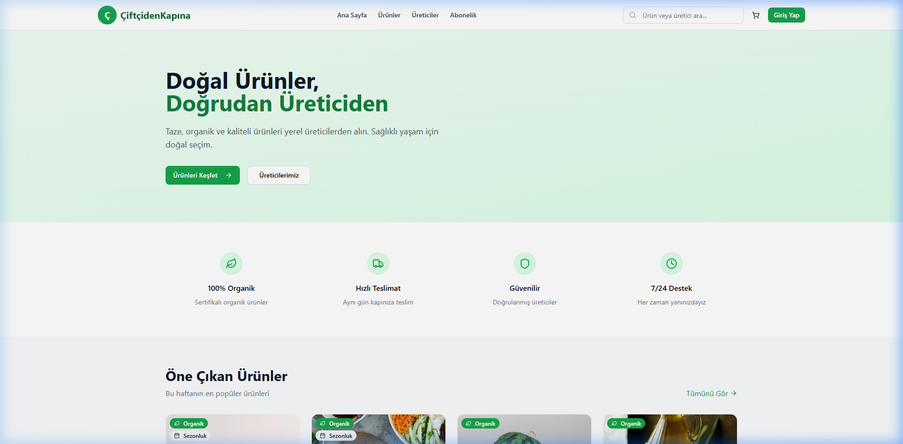
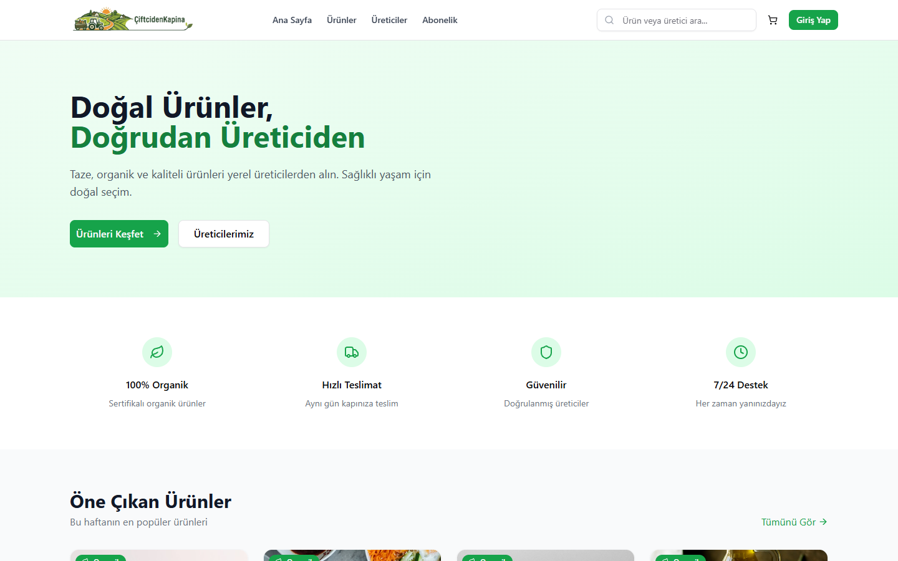
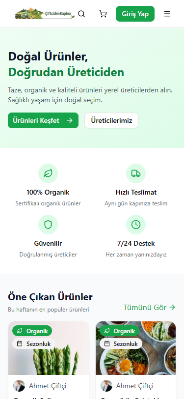
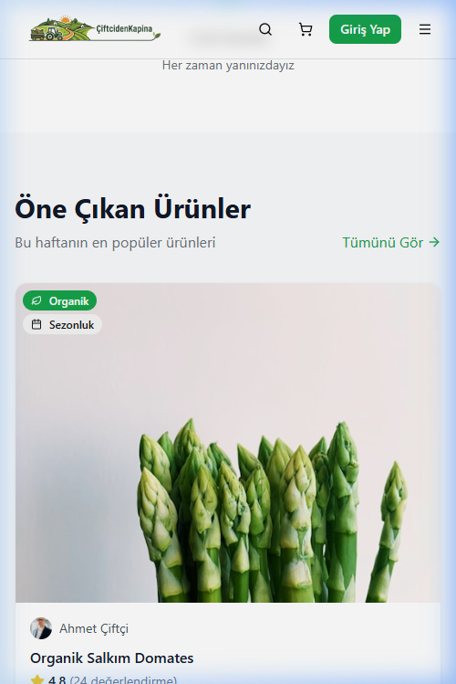
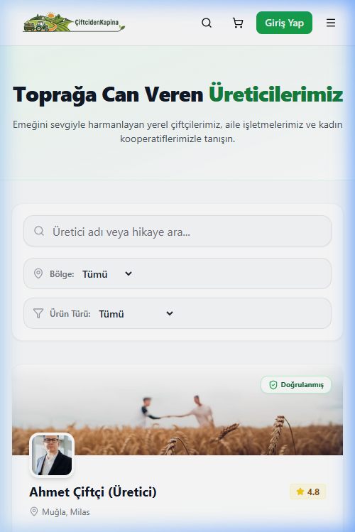

Süpermarket raflarını unutun. Hiçbir kimyasal değmemiş, ata tohumuyla üretilen en taze mahsuller doğrudan tarladan kapınıza geliyor.

%100 Doğal ve Katkısız
1 Hafta
İçinde Teslim
Modern, akıcı ve güvenli. Alışveriş deneyiminizi sıfırdan tasarladık.
Masaüstü uygulamamız ile ürünlerin en ince detaylarını, çiftçi hikayelerini ve laboratuvar analizlerini büyük ekranda inceleyin.
Web'de İncele
Mobil uyumlu altyapımızla tek tıkla sipariş verin.


Ürünleriniz özel yalıtımlı, doğa dostu ambalajlarla tazeliği bozulmadan ulaşır.

Aracıları ortadan kaldırarak hem sizin uygun fiyata taze ürün almanızı sağlıyor, hem de çiftçimizin emeğinin karşılığını doğrudan kendisine veriyoruz.
Üreticilerimizi TanıyınSağlıklı beslenmek artık bir lüks değil. Sepetinizi doldurun, farkı ilk lokmada hissedin.
Platforma Git